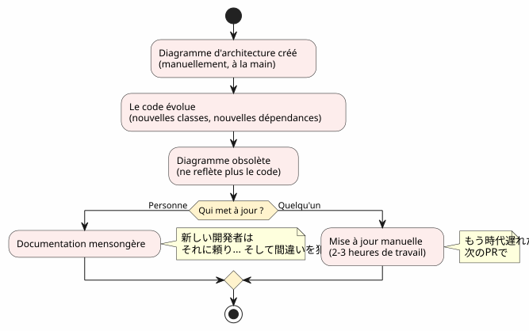
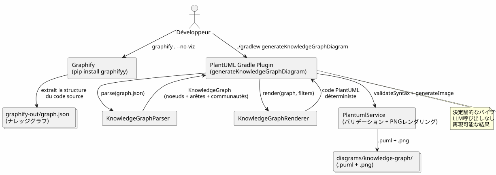
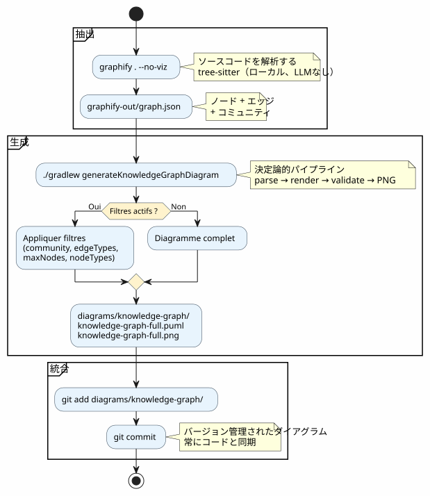
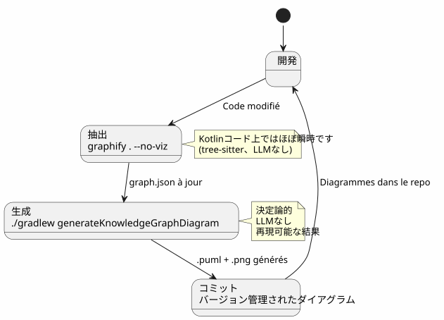
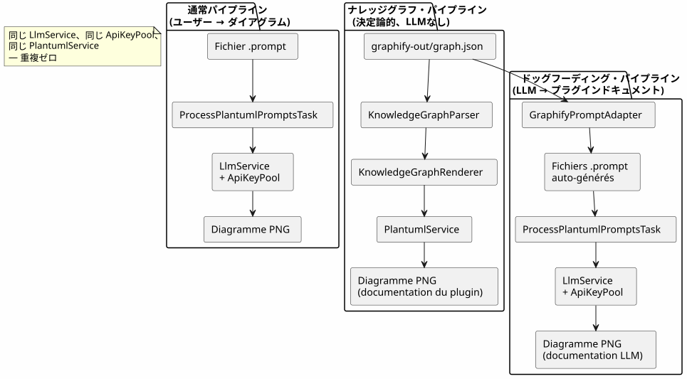
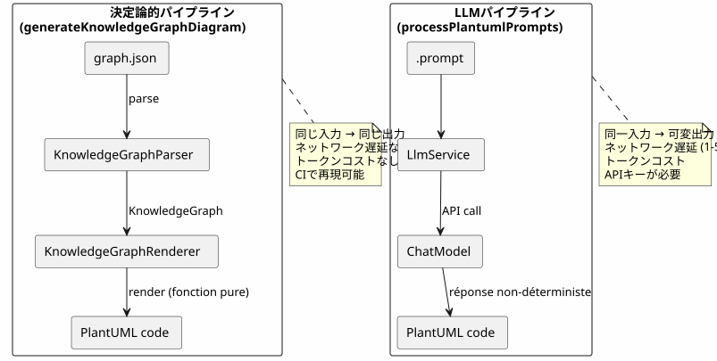
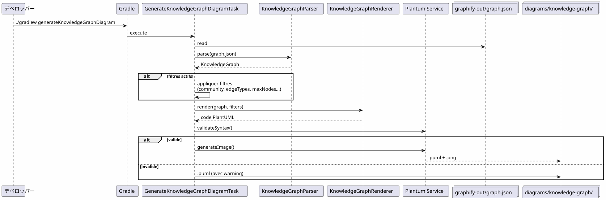
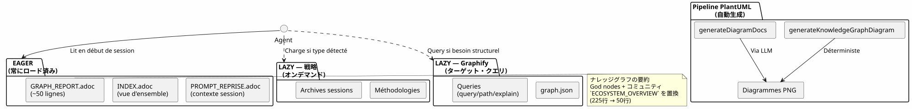
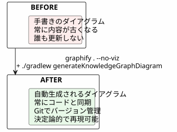

GraphifyをGradleワークフローに統合する：ナレッジグラフからPlantUMLダイアグラムまでを1つのコマンドで
公開日: 19 April 2026
- 問題：コードに常に遅れを取る図表
- 解決策：決定論的なKnowledge Graph → PlantUMLパイプライン
- ステップ 1: Graphifyをインストールし、ナレッジグラフを抽出する
- ステップ 2：GradleプラグインがKnowledge GraphをPlantUMLに変換します
- ステップ3：日常での使用
- Gradle ワークフローにおける完全なパイプライン
- ドッグフィーディング : プラグインは自身をドキュメント化する
- なぜそれが決定的なのか（そしてなぜそれが重要なのか）
- パイプライン自身の図
- プロジェクトガバナンスへの統合
- 設定 : 5分間のチェックリスト
- 落とし穴と緩和策
- 最終的に得られるもの
- リンク
あなたのコードベースは大きくなっています。モジュール間の依存関係が増えていきます。アーキテクチャのドキュメントは、書かれる前に古くなってしまいます。あなたのGradleビルドが 自動的に 実際のコード構造から最新の図を生成できたらどうでしょうか？これはまさに、Graphify + PlantUML Gradle プラグイン パイプラインが行うことです：graphify . --no-viz`Knowledge Graph を抽出する./gradlew generateKnowledgeGraphDiagram`これをPlantUML図に変換します。ゼロLLM、ゼロ手動、100%決定的。
- 目次
-
[]
問題：コードに常に遅れを取る図表
数千行を超えるプロジェクトはこの症候群に直面します：
-
プロジェクトの始めにアーキテクチャ図を描きます
-
コードが進化し、依存関係が変わる
-
�図は装飾的な嘘になる
-
誰もそれをアップデートしない、なぜならそれは面倒だから。
-
新参者はそれに基づいて判断し、間違いを犯す

質問は、図が必要か？ ではない — みんなそれが必要だと知っている。質問は：誰がそれらを最新の状態に保っているのですか？
答え：誰も。ただし自動の場合を除く。
解決策：決定論的なKnowledge Graph → PlantUMLパイプライン
原理はシンプルです：手で図を描く代わりに、それを実際のコード構造から生成される。

2つのコマンド。それだけです。
# Étape 1 : extraire le Knowledge Graph
graphify . --no-viz
# Étape 2 : générer les diagrammes PlantUML
./gradlew generateKnowledgeGraphDiagram結果？ ファイル`.puml` et .png`中`diagrams/knowledge-graph/, Git でバージョン管理され, 常にコードと最新の状態を保つ。
ステップ 1: Graphifyをインストールし、ナレッジグラフを抽出する
インストール
Graphifyはあなたのコードベースを分析し、構造化されたナレッジグラフを構築するPythonツール：
# Méthode recommandée
uv tool install graphifyy && graphify install --platform opencode
# Alternative avec pip
pip install graphifyy && graphify install --platform opencode除外を設定する
ファイルを作成`.graphifyignore`プロジェクトのルートに置き、ビジネスロジックに属していないファイルを除外します：
# Secrets — JAMAIS dans le graphe
*-context.yml
*.env
# Fichiers générés
build/
.gradle/
# Tests fonctionnels
src/functionalTest/Knowledge Graphを�抽出する
graphify . --no-vizフラグ`--no-viz`HTMLの生成をスキップします (Gradleパイプラインでは不要です)。 結果はファイルです。`graphify-out/graph.json`含む :
-
結び目：クラス、関数、ファイル―そのタイプとコミュニティとともに
-
エッジノード間の関係 (EXTRACTED はコードから、INFERRED は LLMによって)
-
コミュニティ: 自動的にグループ化されたリンクされたノード
{
"nodes": [
{"id": "0", "label": "LlmService", "file_type": "code", "community": 0},
{"id": "1", "label": "ApiKeyPool", "file_type": "code", "community": 0},
{"id": "2", "label": "PlantumlService", "file_type": "code", "community": 1}
],
"links": [
{"source": "1", "target": "0", "relation": "uses", "confidence": "EXTRACTED", "weight": 0.9},
{"source": "0", "target": "2", "relation": "calls", "confidence": "INFERRED", "weight": 0.7}
]
}|
ソースコード ( |
ステップ 2：GradleプラグインがKnowledge GraphをPlantUMLに変換します
パイプラインアーキテクチャ
プラグイン`com.cheroliv.plantuml`タスクを組み込む`generateKnowledgeGraphDiagram`変換する`graph.json`PlantUML図の形で完全に決定論的:

内部コンポーネント
| コンポーネント | 役割 |
|---|---|
|
解析`graph.json`サポート 3 フォーマット : ネイティブ graphify ( |
|
決定的に変換する一つ`KnowledgeGraph`PlantUML コード。タイプ別にグループ、パッケージにコミュニティ、自動凡例。 |
|
Gradleタスクは、parse → render → validate → PNGをオーケストレーションします。Gradleプロパティ経由で設定可能。 |
|
データモデル： |
|
構文検証 + PNGレンダリング（プラグインのすべてのタスクで再利用） |
レンダリングルール
レンダラーは決定論的な視覚的慣習を適用します：
| エッジのタイプ | PlantUML記法 | 意味 |
|---|---|---|
�抽出された |
|
ソースコードから抽出された関係 (確実性) |
推論された |
|
LLMによって推論された関係 （信頼スコア） |
あいまいな |
|
�曖昧な関係 (確認が必要) |
コミュニティは、自動色パレットを持つ PlantUML パッケージとしてレンダリングされます。
ステップ3：日常での使用
完全図
# Générer le diagramme du Knowledge Graph complet
./gradlew generateKnowledgeGraphDiagram出力：diagrams/knowledge-graph/knowledge-graph-full.puml（空）.png
コミュニティで絞り込む
# Une seule communauté
./gradlew generateKnowledgeGraphDiagram \
-Pplantuml.kg.community=community_0
# Limiter le nombre de noeuds (lisibilité)
./gradlew generateKnowledgeGraphDiagram \
-Pplantuml.kg.community=community_0 \
-Pplantuml.kg.maxNodes=15エッジの種類でフィルタリング
# Uniquement les relations certaines (EXTRACTED)
./gradlew generateKnowledgeGraphDiagram \
-Pplantuml.kg.edgeTypes=EXTRACTED
# Relations certaines + inférées
./gradlew generateKnowledgeGraphDiagram \
-Pplantuml.kg.edgeTypes=EXTRACTED,INFERREDノードの種類と信頼度でフィルター
# Uniquement les classes de code
./gradlew generateKnowledgeGraphDiagram \
-Pplantuml.kg.nodeTypes=code
# Seuil de confiance minimum (pour les INFERRED)
./gradlew generateKnowledgeGraphDiagram \
-Pplantuml.kg.minConfidence=0.7カスタム出力ディレクトリ
./gradlew generateKnowledgeGraphDiagram \
-Pplantuml.kg.outputDir=docs/architectureプロパティの完全な参照
| 所有権 | デフォルト | 説明 |
|---|---|---|
|
(すべて) |
名前でコミュニティをフィルタリング（部分一致） |
|
(皆) |
カンマで区切られたエッジの種類： |
|
|
エッジの最小信頼しきい値 |
|
(無制限) |
表示する最大ノード数 |
|
(すべて) |
ノードの種類、カンマで区切られた（例`class`, |
|
|
ファイルの出力ディレクトリ`.puml` et |
Gradle ワークフローにおける完全なパイプライン
ワークフローのタイプ

開発サイクルへの統合
パイプラインは開発の重要な段階に自然に統合されます：

インクリメンタルアップデート
コードが変更されたとき、ゼロからグラフ全体を再構築するわけではありません：
# Mise à jour incrémentale (fichiers modifiés uniquement)
graphify . --update
# Puis régénérer les diagrammes
./gradlew generateKnowledgeGraphDiagram|
|
ドッグフィーディング : プラグインは自身をドキュメント化する
PlantUML プラグインは、プロンプトをダイアグラムに変換するために存在します。また、自分の propre コードベースの Knowledge Graph もドキュメント用ダイアグラムに変換できます。これは dogfooding です：プラグインは自分のサービスを利用します。

関連付けられた Gradle タスク :
| タスク | LLM ? | 説明 |
|---|---|---|
|
いいえ |
変換`graph.json`PlantUML (決定的)で |
|
はい |
生成する`.prompt`グラフから、LLM（dogfooding）を使って処理しています。 |
# Documentation déterministe (rapide, pas de LLM)
./gradlew generateKnowledgeGraphDiagram
# Documentation LLM (plus riche, consomme des tokens)
./gradlew generateDiagramDocsなぜそれが決定的なのか（そしてなぜそれが重要なのか）
パイプラインの重要なポイント`generateKnowledgeGraphDiagram` : 彼はどのLLMも呼び出さない. 変換`graph.json`→ PlantUML は純粋関数です。

具体的な利点：
| 利点 | インパクト |
|---|---|
再現性 |
同じ`graph.json`→ 同じ図。正確です。毎回。 |
ゼロコスト |
LLMの呼び出しなし = トークンなし = API請求なし |
ゼロレイテンシー |
Parse + render は~100msかかり、1〜5秒ではありません。 |
CI対応 |
APIキーは必要ありません。変動するLLMの応答によるフレークなテストは発生しません。 |
バージョン可能 |
Le |
パイプライン自身の図
ループを閉じるために、プラグインによって生成されるパイプラインの図を以下に示します：

プロジェクトガバナンスへの統合
私たちのプロジェクトでは、このパイプラインはAIエージェントのためのEAGER/LAZYコンテキスト管理戦略に組み込まれます。ナレッジグラフは、手動のアーキテクチャドキュメントに代わり、構造化され、クエリ可能で、自動的に更新されるグラフを提供します。

二つのシステムの結びつきは補完的である:
-
戦略は「いつ」と「どのように」を管理する— ガバナンス, ワークフロー, アーカイブ
-
GraphifyはQUOIとOÙを管理しますコード構造, 関係, ターゲット絞り込みクエリ
_ セッション戦略はを管理しますいつ et le どう(ガバナンス, ワークフロー, しきい値), Graphifyは管理します何？ et le どこ(コードの構造、関係、ターゲットクエリ). PlantUMLパイプラインは管理します何で(決定論的でバージョン管理され、常に最新の図) _
設定 : 5分間のチェックリスト
| # | ステップ | 注文 |
|---|---|---|
1 |
Graphifyをインストール |
|
2 |
除外を設定 |
作成する`.graphifyignore` |
3 |
Knowledge Graphを抽出する |
|
4 |
図を生成する |
|
5 |
結果をコミットする |
|
# Script complet en 5 commandes
uv tool install graphifyy
cat > .graphifyignore << 'EOF'
*-context.yml
*.env
build/
.gradle/
EOF
graphify . --no-viz
./gradlew generateKnowledgeGraphDiagram
git add graphify-out/GRAPH_REPORT.adoc graphify-out/graph.json diagrams/knowledge-graph/落とし穴と緩和策
| �罠 | 説明 | 緩和 |
|---|---|---|
グラフが濃すぎる |
大きなプロジェクトは、数百の読み取り不能なノードを生成します |
使用する`-Pplantuml.kg.maxNodes=30`そしてコミュニティでフィルタリング |
除外が広すぎる |
多すぎるファイルが`.graphifyignore`グラフの値を減少させる |
まずは credentials と build のみを除外して始める |
�矢印の方向 |
INFERREDエッジはあいまいな方向を持つ可能性がある |
フィルターで`-Pplantuml.kg.edgeTypes=EXTRACTED`特定の関係に対してのみ |
旧式のグラフ |
コードは変わるが、グラフは再構築されない |
使う`graphify . --update`定期的にまたはgitフック`graphify hook install` |
更新されたコスト |
インクリメンタルアップデートはほぼ無料です (tree-sitter local) |
ドキュメントだけ( |
最終的に得られるもの

具体的な利益：
| 利益 | 詳細 |
|---|---|
常に最新のドキュメンテーション |
�図は現在のコードを反映しており、手動のスナップショットではありません。 |
メンテナンスの手間ゼロ |
�図はビルドごとに再生成されます |
技術的負債の削減 |
図を手動で維持する必要はありません |
新しいもののためのビジュアルコンテキスト |
新しい開発者は図を見てアーキテクチャを理解する |
ファインチューニングの可能性 |
ペア (サブグラフ → ダイアグラム) は AI のトレーニングの例です |
自動検証 |
`PlantumlService.validateSyntax()`生成された各図を確認する |
迅速なオンボーディング |
5つのダイアグラム = アーキテクチャの完全なビュー |
(Empty output) なぜがある者は、いかなる「どうすればいいか」にも耐えることができる。 __
Le pourquoi : 図は常に最新状態。Le comment : Gradle パイプライン内の 2 つのコマンド。
リンク
-
fg コマンドのスーパー テクニック— ターミナルワークフローに関する前の記事
関連記事
31 May 2026